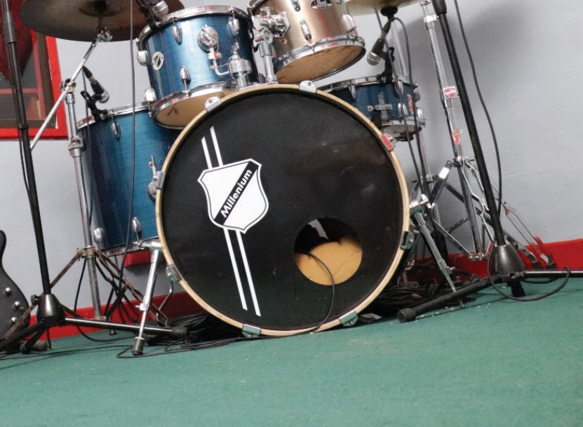
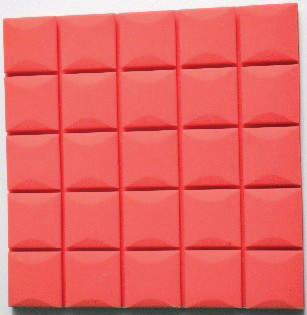
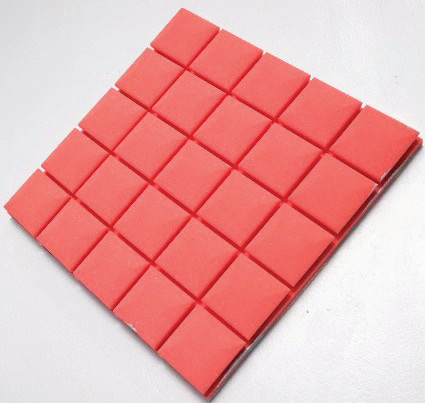

2. You have been asked to explain what happens in a music studio to a friend who has never been inside one. How would you describe the roles of the control room and the live room?
Acoustic treatment in a music recording studio
Acoustic treatment is the control of echoes and unwanted noise in a recording studio. When someone sings or plays an instrument in a studio, the sound bounces off the walls, floor and ceiling. These bouncing sounds are called echoes. If the microphone picks up these echoes, the recording will not sound natural. It may sound blurry or messy. Every music recording studio needs acoustic treatment to produce high-quality music.
There are various methods of acoustic treatment that can be applied to prevent echoes from getting into the microphone. One of the common methods is the use of foam panels. This is a special soft foam placed on the walls to absorb sound and stop echoes from bouncing around the room. Another method is the use of a thick wool carpet on the floor to soak up sound. A thick wool carpet also stops the sound from bouncing off the hard floor. Figures 7.3 (a) and (b) show a thick wool carpet and foam panels for acoustic treatment.


